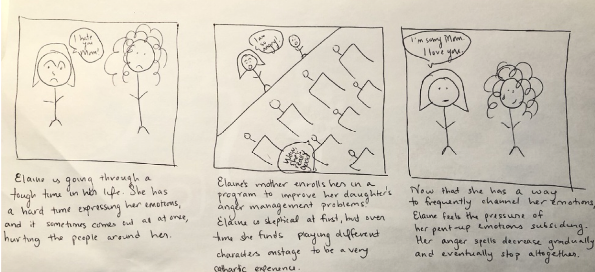

My Role
I worked on this project as a part of the User-Centered Research and Evalation Course at CMU in Fall of 2020, with teammates Connor Shannon, Gabriela Suazo, Phoebe Soong. For this project, I contacted interviewees, guided the user research & synthesis process, generated ideas based off of key insights, and prototyped solutions based off of these insights.
Overview
In this project, we explored how young children become interested in the performing arts and how they maintain this interest. We conducted this research and designed this solution for the Kelly-Strayhorn Theater of Pittsburgh, Pennsylvania. After studying existing solutions and conducting extensive user research on our own, we identified that mentorship plays a critical factor in the development of young, new performers, that mentorship can lead to a “virtuous cycle” by which young mentees grow into strong mentors, and that bonding can make or break those initial, formative experiences in the performing arts. Based off of these findings, we developed our solution: A summer program with a heavy emphasis on mentorship and peer bonding. By making mentorship an explicit and structural part of the program, our research has shown that the children are more likely to have positive, meaningful, long-lasting relationships with the performing arts, and likely with Kelly Strayhorn Theater itself. Our idea was well received with our client, and we may work with them in the future to further iterate on the idea and ultimately implement it
Problem
Our client had three main concerns they wanted our research to address:
- How might we increase participation and donations to the Kelly Strayhorn Theater?
- How might we encourage people to engage with others unlike themselves in order to create shared understanding?
- How might we encourage people to engage with others unlike themselves in order to create shared understanding?
How might we introduce students to performing arts and foster their continued interest in it?
Methods
Defining the Problem
We knew the problems KST wanted to have solved: increased participation, diversity, and interactions within the community, even in the era of COVID. We set out to determine what problem space to focus our research on, to best address our client’s needs while addressing pain points of some aspect of the general performing arts community. After defining three potential research goals and generating 5-7 hypotheses regarding each, we settled on the following research goal: To understand more about young students’ interest in the performing arts. We felt that this area was rich with opportunities to attract new, diverse participation.
Think Aloud For Generative Research
Before delving into our own user research, our team figured it would be useful to learn from the successes and failures of others. We researched the websites of existing programs, and found a website for a mentorship program. After preparing some tasks, we contacted participants in the age range 9-18 who were involved in theater or dance. We instructed them to think aloud while performing these tasks, and generated the following insights based off of our findings:
- Users have issues with finding program information, especially if it is buried in the FAQs section
- Because the site places such a large emphasis on mentees, it was difficult for people to find information about mentors.
- Users noted that they liked being able to see candid pictures of past participants in the program.
“I feel like this should have been some place more obvious, like within the main program description."
“I need easy access to descriptions of these mentors, not just a row of photos”
“These pictures give me a sense of the atmosphere and type of people that thIey might interact with if I join the program...I find this way more appealing than staged photos.”
Contextual Inquiry, Interpretation Session,& Affinity Diagram
We conducted contextual interviews using artifact analysis with participants in the age range 9-18 who were involved in theater or dance. We asked them to prepare artifacts such as a picture, video, or playbill that came from:
- Something that sparked their interest in theater/dance
- Their first performance
- The theater community
Our goal was to better understand:
- Motives behind getting involved in theater for the first time
- Personal connections and their influence on initial student interest in theater
- What keeps students motivated in continuing theater
- How their current identities were shaped by the theater community
- If and how their social environment, and/or access to theater activities influenced their decisions to get involved in theater.
- How their theater involvement is connected to their larger community
We conducted semi-structured interviews, and then conducted an interpretation session for each of the participants. Finally, we sorted the notes from our interpretation session to create an affinity diagram.
Below are notable insights and supporting quotes from our research participants:
- Family can significantly influence kids’ initial and continued involvement in performing arts.
- Early involvement in the performing arts increases likelihood of deeper engagement in later years.
- Older members of the theater community act as role models to younger members, which inspire motivation and interest in theater involvement.
- Involvement with performing arts helped with establishing and building support systems with other community members.
- Involvement in the performing arts has a deep impact on students’ sense of self-identity.
“The first show I watched was to see my aunt dancing. I was just two years old. It was then that I knew I wanted to dance, too.”
“Even though no one in my family does theater, having my mom and dad consistently support me is a big reason I still continue to do it.”
“I felt a sense of pride at being the youngest to perform in certain shows.”
“I was two years old when I watched my first show, and four years old when I gave my first performance”
“Almost all of my fellow dancers started when they were young, just like me...I only know a few that started in high school.”
“She was my role model. I think she’s a big reason I stuck with it.”
“The best dance experiences I’ve had have been the ones where I’m close with everyone on the team. When we’re all friends, performing with them is more enjoyable.”
“With each new show I got introduced to a new cast, a new group of friends. But I remained friends with people from old casts, so my social circle was constantly expanding.”
“My bonds with my friends are a bigger reason that I’m motivated to stay in theater than my passion for performing.”
“Being involved in dance has taught me how to overcome difficulties. I love dancing in pointe even though it causes a lot of pain, and I even got injured once. I think experiences like that teach dancers resilience.”
“Being involved in theater has given me life experiences I wouldn’t have otherwise had...I got to attend a theater festival in Georgia. It was the first time I ever flew on a plane, and it was an incredible bonding experience for me and my castmates.”
“Theater has taught me how to manage my time well, and how to work hard.”
Speed Dating
After a few days, we revisited the affinity diagram with fresh eyes. We “walked the wall” of our affinity diagram and interview quotes, identifying user needs and potential design ideas with black sticky notes.
We then held a Crazy 8’s Session, where we came up with eight storyboards per team member within an eight-minute period. After the eight minutes, we voted on top storyboards as a group to identify the top 4 user needs we would focus on with our speed dating sessions.
We decided on the following top user needs:
- Parent’s investment
- Recognition outside of the theater (school, community, etc.)
- Internal supportive culture (peers, mentors, etc.)
- Addressing mental health
For each of these four user needs, the team generated three storyboards of varying levels of social riskiness, resulting in twelve storyboards total. As before, we recruited participants aged 12-18 involved in dance or theater, where we first asked participants to give their thoughts on the depicted scenario, and then asked probing questions to better understand their interpretation of the need.
Below is an example of a user need (addressing mental health), depicted using three storyboards of low risk, medium risk, and high risk, respectively.
To learn more about speed dating, I would highly recommend this article.
After holding the Speed Dating sessions, we generated an insight for each user need:
- Parental Support - Having parents in the audience is a huge motivator during the performance.
- Recognition from the Outside Community - Having friends and peers who are not involved in the performing arts can be incredibly motivating, and vice versa.
- Internal Supportive Culture - Every participant saw a lot of value in a mentorship program inside the performing arts space
- Address Mental Health - Performing is a cathartic experience
“If my parents didn’t show up for one of my performances, I would feel really discouraged.”
“When I’m performing, I push myself to excel when I think of my family in the audience.”
“A group of my school friends came to see me at my last dance performance, even though none of them performed themselves. After the performance, they kept talking about how blown away they were. It was really cool to see them appreciate what I do.”
“After visiting another school for a dance competition, I realized that people at my school were not as supportive of the arts as people at other schools...I found this demoralizing.”
“The theater community is naturally outgoing...I think everyone would be willing to be a mentor.”
“I learned a lot from my role models when I was younger...if I had a mentorship program when I was younger, I would have found this very valuable.”
“For me, theater is an escape from all of my emotions. I can put myself in my character’s shoes and shift the focus away from myself.”
“Dancing is how I process my emotions.”
Our Solution
Based off of our speed dating sessions, we decided that the third user need, an internal supportive culture, reflected a very strong need for mentorship. While mentorship did exist in our participants’ performing experiences, none of their programs made mentorship an explicit part of its structure.
Thus, we designed KST Kids, a performing arts summer camp that places a heavy emphasis on mentorship and bonding. We used Experience Prototyping to test the idea on parents, children who are involved in theater, and children who are not involved in theater, to gauge interests and needs. We made some revisions to our solution, and presented it to our client.
The final solution is a six-week program for children geese 6-17. Older children with experience are matched with younger children in a mentor-mentee relationship, based off of shared interests. Further, “mentor” children are also the “mentees” of KST artists, an addition we made based on feedback from our Experience Prototyping session. The program culminates in a final performance, reflecting a finding from our Generative Research that a final performance leads to a sense of closure, satisfaction, and accomplishment.
Our client received our solution with a strong positive reception, and indicated clear interest in either implementing our solution or integrating the emphasis on mentorship into their existing children’s programs. Below are mockups of a web page, poster, and Instagram post advertising our solution.